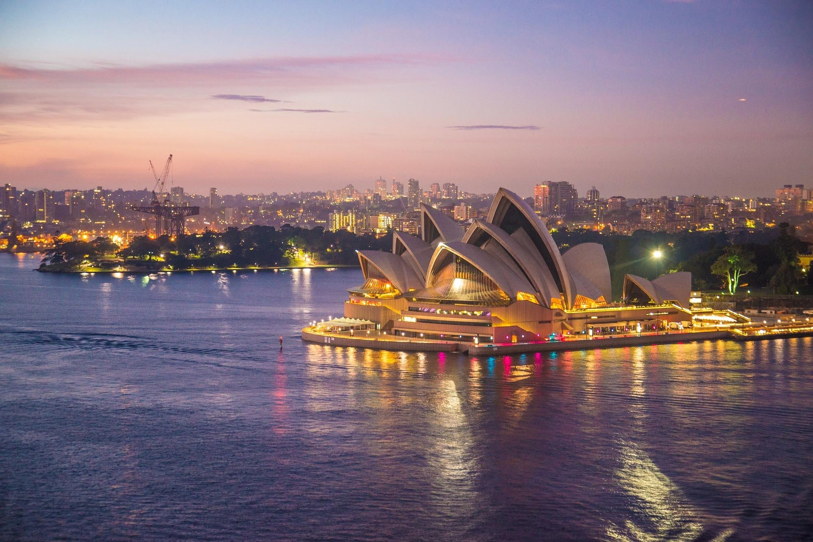
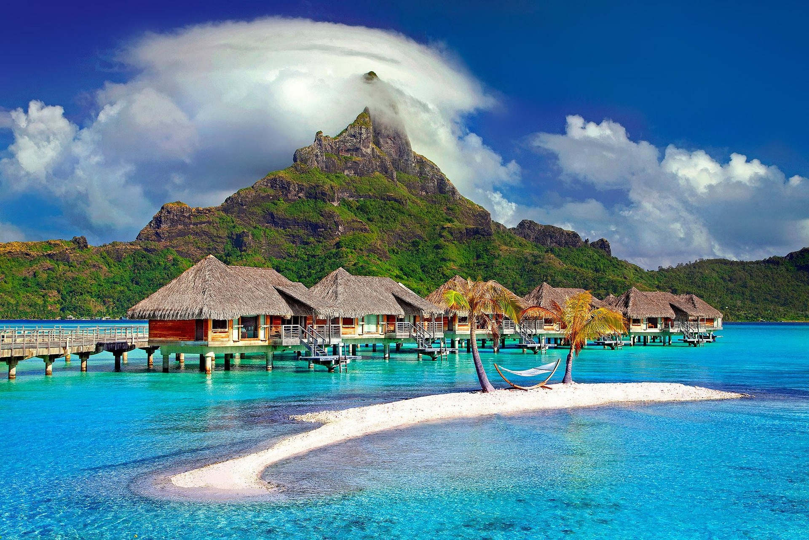
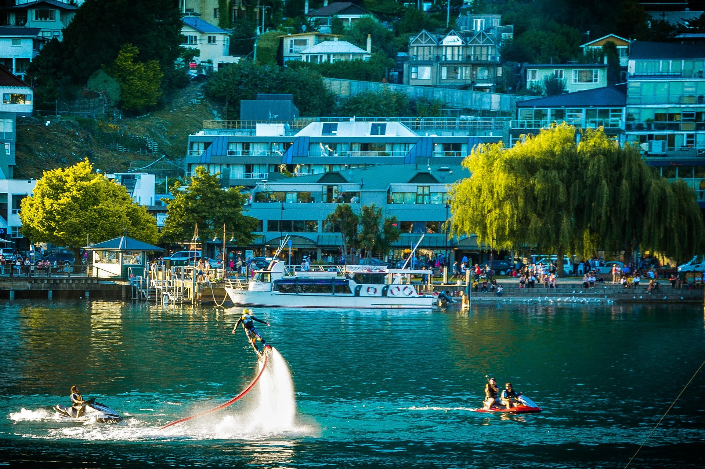

Oceania Destinations
Oceania is known for its stunning islands and clear blue oceans. It includes Australia, New Zealand, and many beautiful Pacific islands.
The region is known for its relaxed lifestyle, friendly culture, and strong connection to nature.
Top Places to Visit:
Sydney is famous for the Sydney Opera House, beautiful harbour views, and modern city life.
Queenstown in New Zealand is known as the adventure capital of the world, offering activities like bungee jumping, skiing, and hiking.
Activity reference: Queenstown
Bora Bora is a tropical paradise known for crystal-clear water and luxury overwater bungalows.
Natural Attractions:
The Great Barrier Reef in Australia is the largest coral reef system in the world and is famous for its marine life.
New Zealand offers breathtaking mountains, lakes, and filming locations from movies like The Lord of the Rings.



Image Source: Pixabay